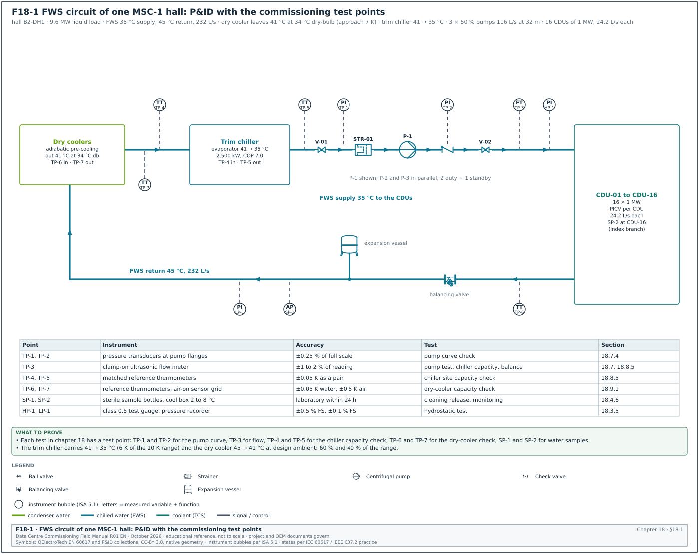
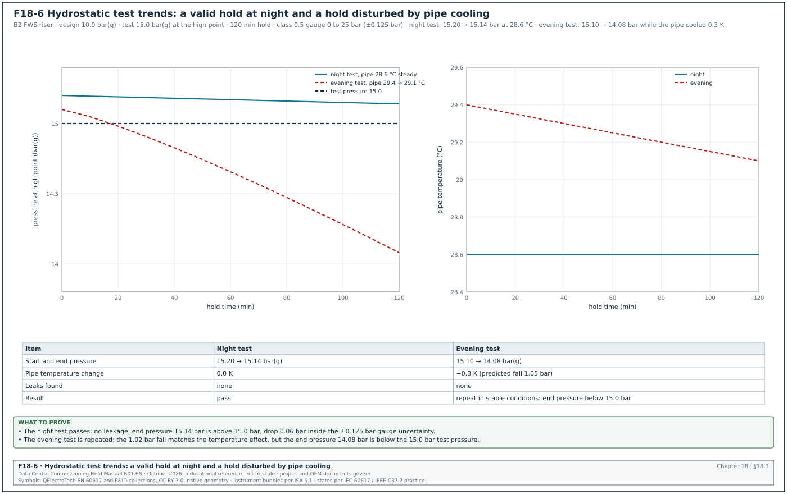
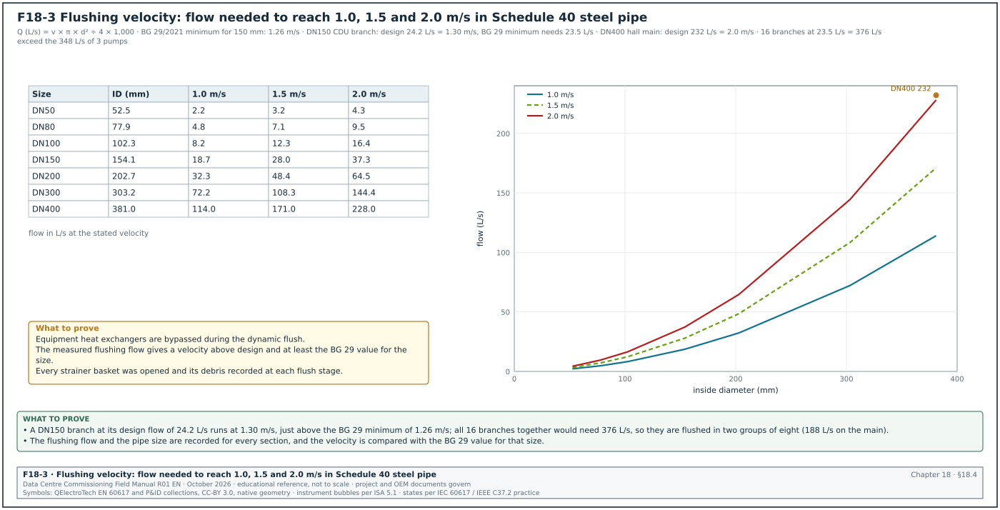
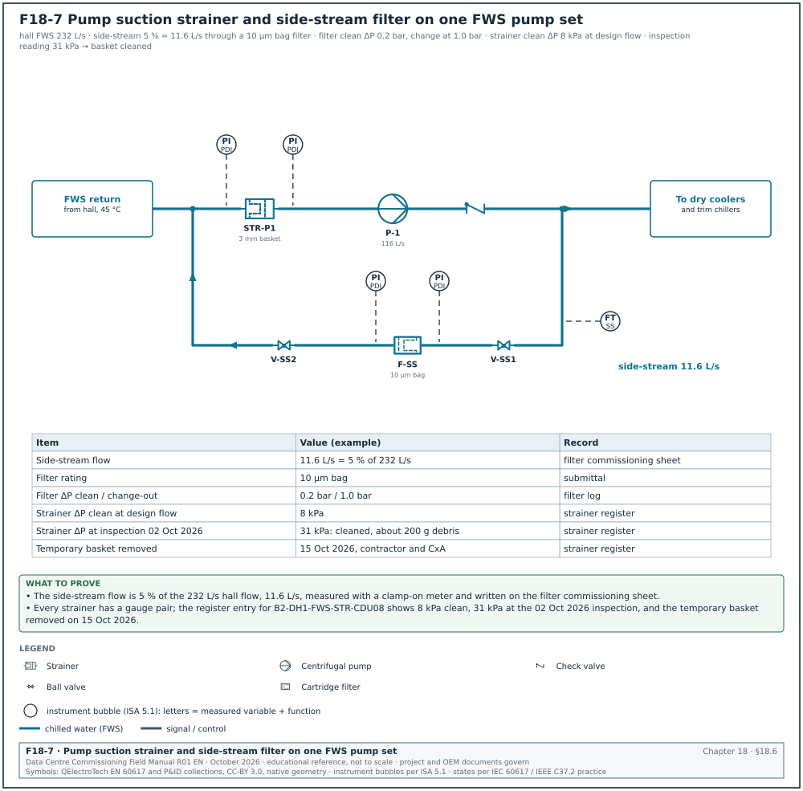
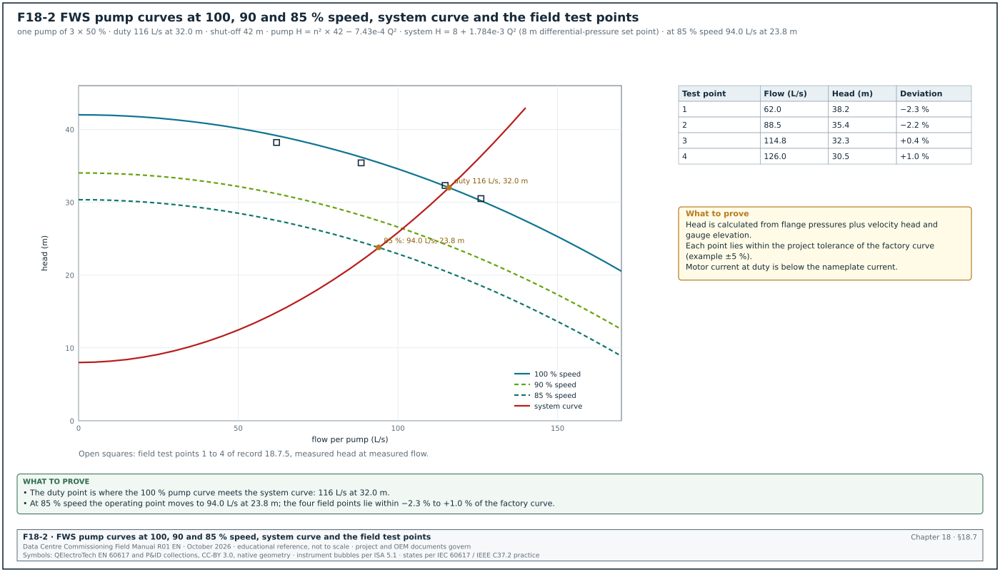
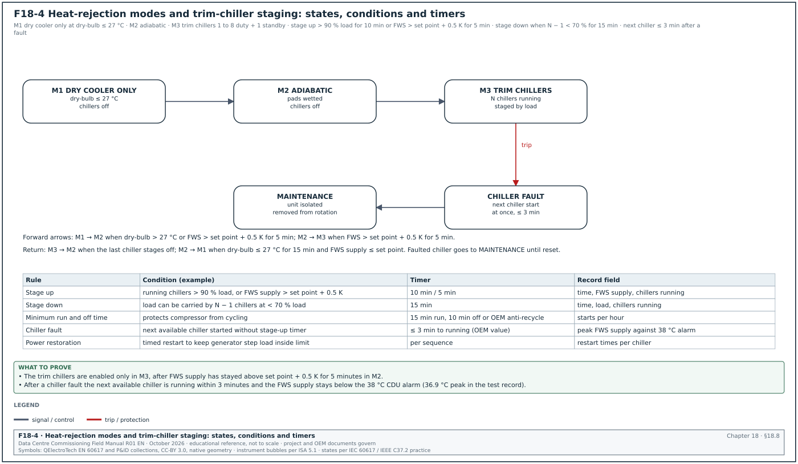
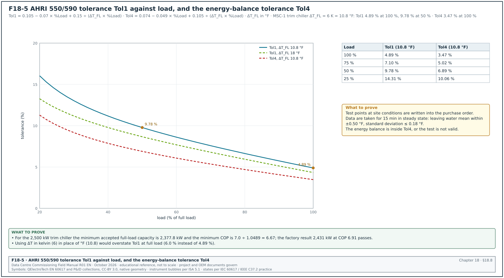
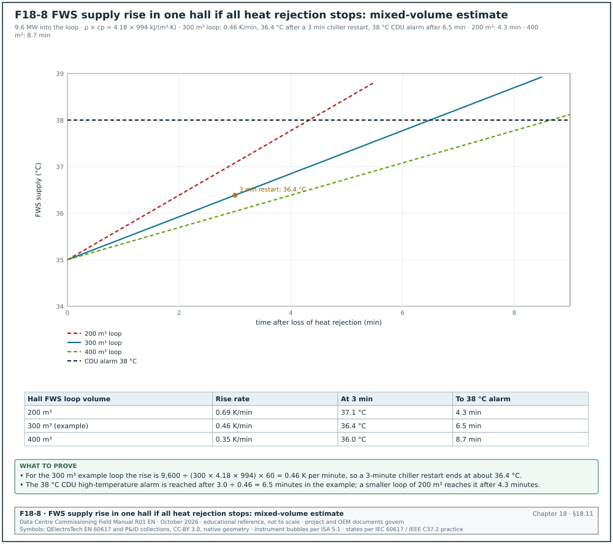

18.0Scope of this chapter
This chapter covers the central cooling plant of a data-centre building. The plant has the facility water system (FWS) that collects heat from the coolant distribution units (CDU), and the chilled-water (CHW) system that serves the computer room air handlers (CRAH) and fan walls. It also has the chillers, the pumps, the dry coolers and cooling towers that reject heat to the outside air, and the water inside all of these circuits. For each test the chapter gives the instrument, the test value, the duration, the acceptance value and its source. It also gives the fields of the record.
- Plant arrangement. The FWS and CHW loops of one MSC-1 building, with the test points that the commissioning tests use (Figure F18-1).
- Commissioning sequence. The order of work from factory test to integrated systems test (IST), with hold points and the record that releases each stage.
- Pressure testing. Hydrostatic tests of pipework to American Society of Mechanical Engineers (ASME) B31.9 and ASME B31.3, with the test pressure, hold time, instrument and temperature correction.
- Pre-commission cleaning. Flushing, chemical cleaning, passivation and the water-quality acceptance values of BSRIA BG 29/2021 (Figure F18-3).
- Water treatment. Fill water, inhibitor dosing, side-stream filtration, glycol where used, and the sampling plan for the first year.
- Strainers and filters. Temporary and permanent strainers, mesh sizes and the differential-pressure log.
- Pumps. Pump curves, variable frequency drive (VFD) set-up, duty and standby changeover, and the pump performance test (Figure F18-2).
- Chillers. The factory performance test to Air-Conditioning, Heating, and Refrigeration Institute (AHRI) Standard 550/590 with its tolerance equation, the site start-up checklist, the site capacity check and chiller staging (Figures F18-4 and F18-5).
- Dry coolers and cooling towers. Fan and coil checks, adiabatic pre-cooling water systems, the field capacity check, and the cooling tower acceptance test to Cooling Technology Institute (CTI) ATC-105.
- Sensors. Calibration of temperature, pressure and flow sensors that the control sequences and the energy reports depend on.
- Functional and failure tests. Plant control sequences at Level 4 (L4), and the plant inputs to the Level 5 (L5) integrated systems test in chapter 28.
- Records and key performance indicators. Record fields, filled examples, common errors and the site checklist.
Documents and standards used are listed here. Chillers: AHRI Standard 550/590 (I-P) and AHRI Standard 551/591 (SI), and ANSI/ASHRAE Standard 30 (method of testing liquid chillers). Piping: ASME B31.9 (building services piping) and ASME B31.3 (process piping). Water: BSRIA BG 29/2021 (pre-commission cleaning of pipework systems), BSRIA BG 50 (water treatment for closed heating and cooling systems), BS 8552 (sampling and monitoring of water from building services closed systems) and ANSI/ASHRAE Standard 188 (legionellosis risk management). Balancing and equipment tests: CIBSE Commissioning Code W and its 2025 successor "Water distribution systems", ISO 9906:2012 (rotodynamic pump acceptance tests) and CTI ATC-105:2022 (cooling tower acceptance test). Energy and process: ANSI/ASHRAE Standard 90.4 (energy standard for data centres) and ASHRAE Guideline 0-2019 (the commissioning process). Start-up: the chiller manufacturers' start-up documents (Trane, Carrier, Johnson Controls York, Daikin). The worked examples use the MSC-1 numbers in case_ledger.json.
18.1Plant arrangement and the numbers used in this chapter


18.1.1What the plant does
A data hall with liquid-cooled racks produces two heat streams. The larger stream leaves the racks in the technology cooling system (TCS) water, passes through the CDU heat exchanger and enters the facility water system. The smaller stream leaves the racks as warm air, is taken up by the CRAH or fan-wall coils and enters the chilled-water system. The central plant removes both heat streams and rejects them to the outside air.
The FWS runs warm: in the MSC-1 worked example it supplies 35 °C and returns 45 °C. Water at 35 °C can be produced by a dry cooler for much of the year, even in Jakarta. When the outside dry-bulb temperature is too high for the dry cooler alone, a trim chiller takes the remaining heat. The CHW system runs at 18 °C supply and 24 °C return, which needs a chiller for most hours in a tropical climate.
18.1.2MSC-1 plant numbers
In the MSC-1 worked example the campus has 4 buildings, each with 3 data halls of 12 MW information technology (IT) load. The following values come from case_ledger.json or are derived from it in this chapter.
| Quantity | Value | Basis |
|---|---|---|
| IT load per hall | 12.0 MW | ledger hall_it_mw |
| Liquid share per hall (capture ratio 0.8) | 9.6 MW | ledger hall_liquid_mw |
| Air share per hall | 2.4 MW | ledger hall_air_mw |
| FWS supply and return | 35 °C and 45 °C, range 10 K | ledger fws_supply_c, fws_return_c |
| CHW supply and return | 18 °C and 24 °C, range 6 K | ledger chw_supply_c, chw_return_c |
| FWS flow per MW at 10 K | 24.17 L/s | ledger tcs_flow_lps_per_mw |
| FWS flow per hall | 232.0 L/s | 9.6 × 24.17 |
| CHW flow per hall | 95.9 L/s | 2,400 kW ÷ (4.172 kJ/(L·K) × 6 K) |
| Design dry-bulb and wet-bulb | 34.0 °C and 27.5 °C | ledger |
| Dry-cooler approach | 7 K, giving 41 °C leaving water at 34 °C dry-bulb | ledger drycooler_approach_k |
| Warm-loop heat, campus | 117.2 MW | ledger warm_loop_mw |
| Trim-chiller duty, campus | 70.32 MW (60 % of the range at design) | ledger trim_chiller_duty_mw_campus |
| Closed-loop water volume, campus | 9,000 m³ | ledger closed_loop_water_m3 |
| Peak adiabatic make-up, campus | 450 m³/day | ledger make_up_m3_day_adiabatic_peak |
Worked example: In the MSC-1 worked example the dry cooler at design ambient (34.0 °C dry-bulb) delivers 34.0 + 7 = 41 °C water. The FWS needs 35 °C. The dry cooler removes 45 − 41 = 4 K and the trim chiller removes 41 − 35 = 6 K. At design the dry cooler carries 40 % of the range and the trim chillers carry 60 %. Campus trim duty is 0.6 × 117.2 = 70.32 MW, which is 17.58 MW per building. With trim chillers of 2,500 kW, a building needs 17.58 ÷ 2.5 = 7.03 chillers, rounded up to 8 duty chillers. With 1 standby this gives 9 chillers per building in an N+1 arrangement. The dry cooler alone can meet 35 °C when the dry-bulb is at or below 35 − 7 = 28 °C.
The chiller sizing above applies to the warm-loop trim chiller plant only. The chilled-water plant that serves the CRAH units and fan walls of the air halls is a separate plant. It is sized from the ledger cold loop of 36.5 MW for the campus (about 9.1 MW per building). It has 5 chillers of 2.5 MW per building (4 duty + 1 standby) in chapters 03, 12 and 32. Both plant sizes are example values.
18.1.3Test points on the plant P&ID
Figure F18-1 shows the piping and instrumentation diagram (P&ID) of one FWS circuit with the test points. A test point is a fitting that lets the commissioning team connect a calibrated instrument without draining the system. It is a pressure-temperature (P/T) plug, a thermowell with a spare pocket, a flow-measurement station or a sample valve.
| Test point | Location | Instrument connected | Used in test |
|---|---|---|---|
| TP-1, TP-2 | FWS pump suction and discharge | calibrated pressure gauge or transducer, ±0.25 % of full scale | pump curve test (18.7) |
| TP-3 | flow station on the pump header | ultrasonic clamp-on meter or the venturi with a differential-pressure gauge | pump test, chiller capacity check |
| TP-4, TP-5 | chiller evaporator inlet and outlet | reference thermometers in thermowells, matched pair | chiller capacity check (18.8) |
| TP-6, TP-7 | dry-cooler inlet and outlet | reference thermometers | dry-cooler capacity check (18.9) |
| SP-1 | sample valve after the main pump | sterile sample bottle | water-quality sampling (18.4, 18.5) |
| SP-2 | sample valve at the hydraulic extremity of the hall | sterile sample bottle | water-quality sampling |
| HP-1 | high point vent | test gauge for the hydrostatic test | pressure test (18.3) |
| LP-1 | low point drain | test gauge for the hydrostatic test | pressure test (18.3) |
Check: On the design P&ID review (chapter 06), confirm that each test in this chapter has a test point. Confirm that the thermowells for a matched pair are in the same straight run, and that sample valves exist at the main pump and at the hydraulic extremity. A test point that is missing after insulation can only be added after a drain-down.
18.2Commissioning sequence for the central plant
18.2.1Levels and hold points
The commissioning levels L1 to L5 are defined in chapter 02.
| Level | Activity in this chapter | Exit record | Blocks |
|---|---|---|---|
| L1 | chiller factory performance test, pump factory test, dry-cooler factory inspection | factory test report signed by the commissioning authority (CxA) | shipment |
| L2 | installation checks, pipe pressure test, flushing and cleaning, water-quality release | MEC-L2-PT-nn pressure test certificate, MEC-L2-FL-nn cleaning certificate | filling with treated water, equipment connection |
| L3 | start-up of pumps, chillers and dry coolers by the manufacturer, sensor calibration | original equipment manufacturer (OEM) start-up report, MEC-L3-CAL-nn calibration sheet | functional testing |
| L4 | pump performance test, chiller site capacity check, staging and failover tests, water balance | MEC-L4-FPT-nn functional test record | integrated systems test |
| L5 | plant behaviour in utility loss, chiller failure, pump trip and heat-load tests | IST script results (chapter 28) | handover |
18.2.2Hold points that stop the next stage
- Pressure test before insulation. No insulation goes on a joint until the pressure test certificate for that section is signed. The insulation contractor's start depends on the pipe contractor's certificate.
- Cleaning before equipment connection. The chiller evaporators, CDU heat exchangers and plate heat exchangers stay isolated or bypassed until the flushing results meet the acceptance values in 18.4. Debris in a brazed plate heat exchanger cannot be removed.
- Water quality before start-up. The water treatment specialist issues the water-quality release before the manufacturer starts any chiller. Chiller manufacturers ask for proof of water quality and strainer installation on their start-up pre-checklist.
- Calibration before functional tests. Sensors used by the sequences are calibrated at L3. A functional test run on uncalibrated sensors is repeated.
- Water balance before heat-load tests. The FWS flow to each CDU and the CHW flow to each CRAH are within tolerance (18.7.8) before the heat-load test in chapter 19 starts.
18.2.3Typical durations for one building
| Activity | Owner | Witness | Duration (working days) |
|---|---|---|---|
| Chiller factory test, per chiller model | chiller manufacturer | CxA, owner engineer | 1 to 2 per unit, 3 units sampled |
| Pressure test, per riser or plant section | mechanical contractor | CxA sample 20 % | 1 per section including fill and drain |
| Flushing and cleaning, FWS of one hall | cleaning specialist | CxA for sampling | 8 to 12 |
| Water-quality laboratory results | accredited laboratory | — | 2 to 7 (bacteria up to 5 days, sulphate-reducing bacteria up to 21 days) |
| Chiller start-up, per chiller | chiller manufacturer | CxA 100 % for first unit, then sample | 1 to 2 |
| Pump performance test, per pump | mechanical contractor | CxA | 0.25 |
| Plant functional tests, per building | controls contractor with mechanical contractor | CxA | 5 to 8 |
18.3Hydrostatic pressure testing of pipework


18.3.1What the test proves and why it exists
A hydrostatic test fills a closed section of pipe with water, raises the pressure above the design pressure, holds it and checks every joint for leakage. It proves the strength and tightness of the pipe and joints before insulation hides them and before the water carries heat from live IT equipment.
18.3.2Test pressure and duration
| Code | Test medium | Test pressure | Minimum hold | Notes |
|---|---|---|---|---|
| ASME B31.9 (building services piping) | water | not less than 1.5 times the design pressure at every point in the system | 10 minutes | the test stress must not exceed 90 % of the specified minimum yield strength (secondary sources NIH ORF 2019 and SLAC; confirm the 90 % limit in ASME B31.9-2025, para. 937.3) |
| ASME B31.9 | air or gas (pneumatic) | 1.25 times the design pressure in the SLAC table of ASME B31.9-2014 test pressures; lower than the hydrostatic value | 10 minutes | pneumatic testing stores much more energy; use only where water cannot be used (confirm the 1.25 factor and its limits in ASME B31.9-2025, para. 937.4) |
| ASME B31.3 (process piping) | water | 1.5 times the design pressure, multiplied by the ratio of allowable stress at test temperature to allowable stress at design temperature | 10 minutes | used for CDU skids and some process skids built to B31.3; the formula is Eq. (24) of para. 345.4.2(b), with the stress ratio limited to 6.5 (secondary sources; confirm against para. 345.4.2(b) of the current edition of ASME B31.3) |
| Project specification (typical) | water | as the code | 2 to 24 hours | owner specifications can set a longer hold; one public sector owner asks for 4 hours on hydronic systems |
The code value is the minimum. The project specification can require more. The commissioning manager uses the larger of the code value and the specification value, and records both on the test certificate.
18.3.3Instruments
| Instrument | Requirement | Why |
|---|---|---|
| Test gauge, analogue | accuracy class 0.5 or better (±0.5 % of full scale), range so that the test pressure is between 1/3 and 2/3 of full scale, calibrated within 12 months with a certificate | a 0 to 25 bar gauge reads 15 bar with ±0.125 bar uncertainty |
| Digital pressure recorder | ±0.1 % of full scale, logging interval 1 minute or less, calibration certificate | gives a pressure trend for the whole hold period |
| Thermometer on the pipe | ±0.5 K, contact probe under insulation or in a thermowell | pressure change from water temperature must be separated from leakage |
| Ambient thermometer | ±0.5 K | explains the trend at sunrise and sunset in an open plant yard |
| Relief valve on the test pump | set at the test pressure plus 10 % or as the method statement | protects the system from over-pressure by the test pump |
18.3.4Temperature effect on a liquid-full pipe
Water expands when it warms, and a closed steel pipe expands much less. In a liquid-full section, a small temperature rise raises the pressure by a large amount. A simple calculation for a DN200 Schedule 40 steel pipe at 25 °C gives about 3 to 4 bar per kelvin. The numerator is the volumetric expansion coefficient of water (about 2.6 × 10⁻⁴ per K) less that of steel (about 3.6 × 10⁻⁵ per K). The denominator is the compressibility of water (about 4.6 × 10⁻¹⁰ per Pa) plus the pipe-wall elasticity term (about 1.3 × 10⁻¹⁰ per Pa). The value is an estimate for planning; the method statement states how the contractor corrects for temperature.
Worked example: During a 2-hour hold on the B2 FWS riser, the pipe temperature falls from 29.4 °C to 29.1 °C after the sun leaves the plant yard. At 3.5 bar per K this predicts a fall of 0.3 × 3.5 = 1.05 bar. The recorder shows a fall from 15.10 to 14.08 bar, which is 1.02 bar. This fall differs from the temperature prediction by 0.03 bar, which is inside the gauge uncertainty of ±0.125 bar, and no joint shows moisture. The trend shows no sign of leakage. The test is still not accepted, because the end pressure of 14.08 bar is below the 15.0 bar test pressure. The test is repeated in stable conditions, for example at night or after the section is shaded. Do not start a test in the morning sun and judge it in the evening shade; this is the most common cause of a disputed pressure test.
18.3.5Procedure
Purpose: Prove the strength and tightness of a pipe section before insulation and before connection to equipment.
Trigger: The mechanical contractor raises an inspection request for a completed section, with the test pack. The test pack holds the isometric drawings marked with the test limits, the list of equipment isolated, the gauge certificates and the method statement.
Owner: Mechanical contractor (test). CxA (witness). Engineer of record (EoR), mechanical (test pressure).
Steps:
- Define the test limits. The contractor marks the section on the isometric drawings with the blank flanges, closed valves and spool pieces, and lists every item excluded from the test. Chillers, CDUs, plate heat exchangers, expansion vessels, safety valves and control valves with a lower rating are isolated or removed. Time limit: test pack issued 2 working days before the test.
- Check component ratings. The CxA compares the test pressure at the lowest point with the rating of every component inside the limits. A valve rated PN16 has a shell test pressure of 1.5 × 16 = 24 bar under EN 12266-1. EN 12266-1 sets the shell test at 1.5 times the allowable pressure at room temperature (secondary sources; the valve data sheet states the shell test pressure of the valve). A chiller water box rated 10 bar(g) must be isolated from a 15 bar test.
- Fill and vent. The contractor fills from the low point with clean water and vents at every high point until water without air comes out. Trapped air makes the pressure rise slow and the hold unstable.
- Stabilise temperature. The section stands full for at least 1 hour, or longer in an outdoor plant yard, until the pipe temperature changes by less than 0.2 K in 30 minutes.
- Raise pressure in steps. The contractor raises the pressure with the test pump to 50 % of the test pressure and holds it for 10 minutes while the team walks the joints. The contractor then raises the pressure in steps of 10 % to the test pressure. The test pressure is read at the gauge position named in the method statement, and the value at the high point must be at least the test pressure.
- Hold. The contractor holds the pressure for the longer of the code minimum (10 minutes) and the specification time, with the test pump isolated. The recorder logs pressure and pipe temperature every minute.
- Inspect every joint. The witness walks the section and inspects each welded, grooved and flanged joint. A joint is acceptable when it shows no visible leak or moisture.
- Judge the result. The test passes when no joint shows visible leakage. The end pressure, corrected for the measured temperature change, must not have fallen by more than the gauge uncertainty (±0.125 bar for the class 0.5 gauge). The specification may also give a fixed allowed drop; use the stricter of the two.
- Release pressure and drain. The pressure is released slowly through the test pump vent, and the section is drained or kept full with treated water, as the cleaning method statement requires. Pipes left full of untreated water for weeks start corrosion and bacterial growth.
- Sign the certificate. Both parties sign certificate MEC-L2-PT-nn the same day. Time limit: certificate uploaded to the common data environment within 1 working day.
Acceptance: No joint shows visible leakage. The pressure stays at or above the test pressure for the whole hold after temperature correction. The high point is at or above 1.5 times the design pressure.
18.3.6Record fields of the pressure test certificate
| Field | Type | Example |
|---|---|---|
| Certificate number | text | MEC-L2-PT-B2-017 |
| System and section | text | FWS riser B2-R2, level 1 to level 4, DN300 and DN200 |
| Drawing and revision | text | B2-M-ISO-2207 rev C |
| Design pressure | bar(g) | 10.0 |
| Code and clause | text | ASME B31.9-2025, para. 937.3, 1.5 × design (confirm para. 937.3 in ASME B31.9-2025; the SLAC procedure cites it) |
| Specified test pressure and hold | bar(g), minutes | 15.0 at the high point, 120 min |
| Pressure at low point | bar(g) | 17.4 (static difference 24.6 m = 2.41 bar) |
| Items isolated | list | CDU branch valves closed and spades fitted; expansion vessel isolated; relief valves removed and blanked |
| Gauge identity and calibration date | text, date | PG-0412, class 0.5, 0 to 25 bar, calibrated 12 Aug 2026 |
| Recorder identity | text | DPR-07, ±0.1 % of full scale |
| Start and end time | time | 21:05 to 23:05 |
| Start and end pressure | bar(g) | 15.20 and 15.14 |
| Start and end pipe temperature | °C | 28.6 and 28.6 |
| Leaks found | text | none |
| Result | pass or fail | pass |
| Signatures | name, role, date | contractor test engineer, CxA witness |
18.3.7Filled record of a passed test
| Time | Pressure at high point (bar(g)) | Pipe temperature (°C) | Joints inspected | Observation |
|---|---|---|---|---|
| 21:05 | 15.20 | 28.6 | — | test pump isolated, hold starts |
| 21:35 | 15.18 | 28.6 | level 1 and 2, 64 joints | dry |
| 22:05 | 15.16 | 28.6 | level 3 and 4, 58 joints | dry |
| 22:35 | 15.15 | 28.6 | plant connection, 12 flanges | dry |
| 23:05 | 15.14 | 28.6 | — | hold complete, drop 0.06 bar inside ±0.125 bar gauge uncertainty |
Common errors:
- Gauge at the wrong point. The test pressure is set at the low point, so the high point sees 2.4 bar less than required. Read the test pressure at the high point, or add the static head to the low-point value.
- Equipment left inside the limits. A CDU or chiller with a lower rated pressure is over-pressurised and its warranty lost. Check the isolation list against the P&ID before the pump starts.
- No temperature record. A pressure fall from cooling is recorded as a leak, or a leak is hidden by warming. Log pipe temperature with the pressure.
- Short hold accepted. The code minimum of 10 minutes is accepted when the specification asks for 2 hours. Write both values on the certificate.
- Pneumatic test without approval. A pneumatic test is run for convenience on a large pipe. Pneumatic tests need written approval, an exclusion zone and the limits of the code.
18.4Pre-commission cleaning and flushing


18.4.1What cleaning is and why it exists
New pipework contains mill scale, welding slag, cutting oil, jointing compound, sand, rust and bacteria from the construction water. If this material stays in the system, it blocks strainers, fouls the plates of the CDU heat exchangers and wears pump seals. It also settles in low-velocity branches and feeds bacteria that cause corrosion under deposits. Pre-commission cleaning removes the material and leaves the internal surfaces in a condition that the water treatment can protect.
BSRIA BG 29 is the United Kingdom guide for this work. The current edition is BG 29/2020, with an amended version published in March 2021 that laboratories cite as BG 29/2021. Many projects still specify BG 29/2012, so the commissioning manager confirms the edition named in the specification and uses its tables.
18.4.2Stages of the cleaning process
| Stage | What is done | Exit check |
|---|---|---|
| 1 Static flush | fill and drain each section to remove loose debris | visually clear water at the drain |
| 2 Dynamic flush | water circulated or run to drain at velocities higher than design, section by section, with equipment bypassed | flushing velocity achieved and recorded; strainers clean |
| 3 Chemical clean | cleaning chemical (detergent, dispersant, sometimes a mild acid with inhibitor) circulated for the time in the method statement | iron and suspended solids trend levels off |
| 4 Flush to drain | cleaning chemical removed until conductivity and iron return near fill-water values | conductivity within the specialist's margin of fill water |
| 5 Passivation and inhibitor | corrosion inhibitor and biocide dosed to the target range | inhibitor level in range |
| 6 Sampling and release | samples to an accredited laboratory, compared with BG 29 tables | release certificate MEC-L2-FL-nn |
18.4.3Flushing velocity
Dynamic flushing moves debris only when the water velocity is high enough to lift and carry particles. BG 29 gives a table of minimum flushing velocities by pipe size. The Open Compute Project (OCP) guideline for pre-commission preparation of TCS row manifolds (January 2025) reproduces the BG 29 (amended 6th edition, 2021) values up to 150 mm. A velocity of about 1 to 1.3 m/s lifts sand and clay particles and gives enough shear at the pipe wall.
| Pipe size (BG 29) | Minimum flushing velocity (m/s) | Corresponding flow (L/s) |
|---|---|---|
| 15 mm | 0.96 | 0.20 |
| 25 mm | 1.03 | 0.60 |
| 32 mm | 1.06 | 1.08 |
| 40 mm | 1.08 | 1.49 |
| 50 mm | 1.11 | 2.47 |
| 65 mm | 1.15 | 4.29 |
| 80 mm | 1.17 | 6.01 |
| 100 mm | 1.21 | 10.50 |
| 125 mm | 1.24 | 16.40 |
| 150 mm | 1.26 | 23.80 |
For pipes above 150 mm, use the values in the full BG 29 table (confirm the sizes above 150 mm in the minimum flushing velocity table of BSRIA BG 29/2021; the OCP reproduction stops at 150 mm). The flows in the BG 29 table use the inside diameters of the pipe series that BG 29 assumes. For the project pipe, calculate the flow from the velocity and the actual inside diameter.
Figure F18-3 gives the flow rates needed to reach 1.0, 1.5 and 2.0 m/s in standard steel pipe sizes. The commissioning manager uses it to judge whether the system pumps can reach the flushing velocity, or whether a temporary flushing pump or a section-by-section flush is needed.
| Nominal size | Inside diameter, Schedule 40 (mm) | Flow at 1.0 m/s (L/s) | Flow at 1.5 m/s (L/s) | Flow at 2.0 m/s (L/s) |
|---|---|---|---|---|
| DN50 | 52.5 | 2.2 | 3.2 | 4.3 |
| DN80 | 77.9 | 4.8 | 7.1 | 9.5 |
| DN100 | 102.3 | 8.2 | 12.3 | 16.4 |
| DN150 | 154.1 | 18.7 | 28.0 | 37.3 |
| DN200 | 202.7 | 32.3 | 48.4 | 64.5 |
| DN300 | 303.2 | 72.2 | 108.3 | 144.4 |
| DN400 | 381.0 | 114.0 | 171.0 | 228.0 |
Flow is calculated as velocity × π × d² ÷ 4, with d the inside diameter in metres; the result in m³/s is multiplied by 1,000 to give L/s.
Worked example: In the MSC-1 worked example the FWS main of one hall carries 232 L/s in DN400 pipe at a design velocity of 232 ÷ 114.0 = 2.0 m/s. The DN150 branch to one CDU carries 24.2 L/s at design. This is 24.2 ÷ 18.7 = 1.30 m/s in Schedule 40 pipe, just above the BG 29 minimum of 1.26 m/s. To flush every branch at least at the BG 29 velocity, each branch needs at least 1.26 × 18.65 = 23.5 L/s. With all 16 branches open the main would need 16 × 23.5 = 376 L/s. The three hall pumps give only 3 × 116 = 348 L/s. The cleaning specialist flushes the branches in two groups of eight, with the other group closed. The main then carries 8 × 23.5 = 188 L/s, which is 1.65 m/s in DN400 and inside the pump capacity. The cleaning specialist records the velocity for each group from the flow meter on the flushing rig and the pipe size. Each group is flushed until the outlet water is clear and the strainer baskets stay clean.
18.4.4Flushing bypasses and equipment protection
- Bypass every heat exchanger. CDU heat exchangers, chiller evaporators and condensers, and plate heat exchangers are bypassed with flushing loops or isolated. Flushing through a brazed plate heat exchanger traps debris between plates where it cannot be removed.
- Remove control valve inserts. Pressure-independent control valves (PICV) and small control valves are fitted with flushing spools or set fully open, as the valve manufacturer's commissioning instruction requires.
- Fit fine temporary strainers. Temporary strainer baskets with fine mesh are fitted at pump suctions and at the equipment connections during flushing, and inspected at every flush stage.
- Protect the pumps. System pumps used for flushing have temporary mechanical seals or the manufacturer's approval for flushing service. Where they do not, a temporary flushing pump is used.
- Drain capacity. The drain route takes the flushing flow and the cleaning chemicals with the permits of the local water authority. A flush that cannot reach velocity because the drain is too small fails the velocity check.
18.4.5Water-quality acceptance values
The values in the next table are the BG 29/2021 guideline values as published by a United Kingdom Accreditation Service (UKAS) accredited laboratory in its test-suite guide (Normec, 2026). The project specification and the current edition of BG 29 govern. The Normec guide quotes the Table 4 values with the table number and the 2021 edition. The fill-water values still need a check (confirm the Table 6 fill-water values against BSRIA BG 29/2021 Table 6).
| Determinand | Unit | After pre-commission cleaning (BG 29 Table 4) | Source of value |
|---|---|---|---|
| Total viable count (TVC) at 30 °C | cfu/ml | less than 10,000 | Normec guide citing BG 29/2021 Table 4 |
| Pseudomonads at 30 °C | cfu/ml | less than 1,000 | Normec guide citing BG 29/2021 Table 4 |
| Sulphate-reducing bacteria (SRB) | detected or not | absent | Normec guide citing BG 29/2021 Table 4 |
| Suspended solids at 105 °C | mg/l | less than 30 at the main pump during circulation; less than 45 at the system extremities and terminal units | Normec guide citing BG 29/2021 Table 4 |
| Total iron | mg/l | less than 6 | Normec guide citing BG 29/2021 Table 4 |
| Dissolved iron | mg/l | less than 3 | Normec guide citing BG 29/2021 Table 4 |
| Total copper | mg/l | less than 1 | Normec guide citing BG 29/2021 Table 4 |
| pH, conductivity, inhibitor | — | range in the cleaning specialist's method statement | BG 29 leaves these to the specialist |
| Determinand | Unit | Fill water quality (BG 29 Table 6) |
|---|---|---|
| Total viable count at 30 °C | cfu/ml | less than 1,000 |
| Pseudomonads at 30 °C | cfu/ml | less than 1,000 |
| pH | — | 6.0 to 8.5 |
| Chloride | mg/l | less than 250 |
| Sulphate | mg/l | less than 250 |
Sulphate-reducing bacteria need a long incubation: laboratories report a 5-day result and a 21-day result. The project plan allows for the 21-day result, or the specification states that the 5-day result releases the system with the 21-day result as a follow-up.
18.4.6Sampling plan
- Sample points. Samples are taken at the main pump (SP-1) and at the hydraulic extremity of each circuit (SP-2), and at intermediate points on large systems. A common practice is one sample per riser and one per 10 terminal units on a branch. Check this number against the guidance (confirm the number of points against the sampling-point guidance of BSRIA BG 29/2021 and BS 8552:2012).
- Sample method. The sampler runs the sample valve for 1 to 2 minutes, then fills sterile bottles for microbiology and plain bottles for chemistry. The sampler labels each bottle with the point, time and system, and keeps the microbiology bottles at 2 to 8 °C.
- Delivery time. Microbiology samples reach the laboratory within 24 hours of sampling. Samples delivered late are rejected and taken again.
- Chain of custody. The CxA witnesses at least 20 % of sampling events and signs the chain-of-custody form.
- Results. The laboratory sends results to the cleaning specialist and the CxA together. A failed point is re-flushed and re-sampled; the release certificate lists every point and the final result.
18.4.7Filled cleaning release record
| Point | System | Date sampled | TVC (cfu/ml) | Pseudomonads (cfu/ml) | SRB (5-day) | Suspended solids (mg/l) | Total iron (mg/l) | Result |
|---|---|---|---|---|---|---|---|---|
| SP-1 B2-DH1 FWS pump header | FWS | 06 Oct 2026 | 1,200 | less than 10 | absent | 8 | 0.9 | pass |
| SP-2 B2-DH1 CDU-16 branch | FWS | 06 Oct 2026 | 3,400 | 80 | absent | 22 | 2.1 | pass |
| SP-3 B2-DH1 CDU-08 branch | FWS | 06 Oct 2026 | 26,000 | 2,300 | absent | 61 | 7.4 | fail, re-flush |
| SP-3 B2-DH1 CDU-08 branch (re-sample) | FWS | 13 Oct 2026 | 2,100 | 40 | absent | 18 | 1.6 | pass |
Worked example: Point SP-3 failed on four values: TVC 26,000 against less than 10,000, pseudomonads 2,300 against less than 1,000, suspended solids 61 against less than 45, and total iron 7.4 against less than 6. The cleaning specialist found that the branch strainer at CDU-08 had not been opened during the dynamic flush, so the branch had seen almost no flow. The branch was flushed at 30 L/s (1.6 m/s in DN150, above the BG 29 minimum of 1.26 m/s) for 4 hours. Biocide was dosed and the point was sampled again 7 days later. The second result passed all values, and certificate MEC-L2-FL-B2-DH1 was signed on 14 Oct 2026, 8 calendar days after the first sample. The delay was 8 days because the strainer register was not checked before sampling.
Common errors:
- Velocity not measured. The flush is run for the hours in the method statement without measuring flow. Record flow and pipe size for each flushing section.
- Dead legs not flushed. Branches with closed valves, future connections and bypass legs keep debris and bacteria. Open or flush each dead leg, or cap it at the main.
- Water left standing. Pipe filled after the pressure test and left without treatment for weeks grows bacteria. Treat the water within the time in the specification or drain.
- Late microbiology samples. Samples left in a site office overnight in Jakarta heat give false results. Use a cool box and a courier booked before sampling.
- Equipment connected early. CDUs are connected to the FWS before the release. Keep the isolation and bypass until certificate MEC-L2-FL-nn is signed.
18.5Water treatment, fill water and glycol
18.5.1What water treatment does in a closed system
After cleaning, the water in the FWS and CHW circuits stays in the pipes for years. Water treatment keeps it in a condition that does not corrode the steel, copper and stainless steel in the circuit and does not support bacterial growth. In a closed circuit the treatment has three parts: a corrosion inhibitor at a controlled concentration, a biocide programme, and filtration that removes the particles that form over time. BSRIA BG 50/2021 covers water treatment for closed heating and cooling systems; it replaced BG 50/2013. BS 8552:2012 covers the sampling and monitoring of water from closed systems. The British Standards Institution (BSI) Knowledge site lists the 2012 edition, published 30 November 2012, as current.
18.5.2Fill water
The fill water is tested before the first fill, because poor fill water puts bacteria and salts into a clean system. In Jakarta the fill water is municipal water from the regional water company (PDAM) or groundwater treated on site, and its quality varies. The commissioning manager asks for a fill-water test against the BG 29 Table 6 values in 18.4.5 before the first fill, and again if the source changes.
| Fill-water check | Instrument | Acceptance (example) | Record |
|---|---|---|---|
| Total viable count at 30 °C | laboratory | less than 1,000 cfu/ml | laboratory report |
| pH | calibrated pH meter, ±0.05 pH | 6.0 to 8.5 | fill-water sheet |
| Chloride | laboratory | less than 250 mg/l | laboratory report |
| Conductivity | conductivity meter, ±2 % of reading | value recorded as the base for the flush-out check | fill-water sheet |
| Hardness | test kit or laboratory | value recorded; the treatment specialist sets the inhibitor | laboratory report |
18.5.3Inhibitor and biocide
- Inhibitor selection. The water treatment specialist selects the inhibitor for the metals in the circuit (carbon steel pipe, copper in coils, stainless steel plates, aluminium if present). The specialist states the target range, for example as nitrite or molybdate concentration. The selection is a submittal (chapter 06) reviewed by the mechanical designer.
- Compatibility with the TCS. The FWS and TCS are separate circuits joined only through the CDU heat exchanger. The FWS inhibitor does not have to match the TCS fluid, but a leaking heat-exchanger plate mixes them, so the CDU manufacturer's fluid list is checked for both (chapter 19).
- Dosing point. Chemicals are dosed through a pot feeder or a dosing pump at a point with flow, for example across the pump.
- Biocide. A non-oxidising biocide is dosed after cleaning and on the treatment specialist's schedule. The specialist's method statement names the biocide and the dose, and states whether two biocides are used in alternation so that bacteria do not adapt to one.
- Target and test. The inhibitor level is tested on site with a test kit after each dose, and the result is logged with the date, the sample point and the person.
18.5.4Side-stream filtration
A side-stream filter takes a small part of the circulating flow through a fine filter and returns it to the circuit. It removes the particles that form after cleaning, before they settle in heat exchangers. No standard sets the side-stream flow or the filter rating; the project design basis states both. The MSC-1 worked example takes 5 % of the circulating flow through a 10 µm bag filter (example values). For the MSC-1 hall FWS at 232 L/s, 5 % is 11.6 L/s.
| Side-stream check | Value (example) | Record |
|---|---|---|
| Side-stream flow | 11.6 L/s, measured with a clamp-on meter | filter commissioning sheet |
| Filter rating | 10 µm bag | submittal |
| Clean differential pressure | 0.2 bar | filter log |
| Change-out differential pressure | 1.0 bar or the manufacturer's value | filter log |
18.5.5Glycol
In Jakarta the FWS and CHW circuits do not freeze, and most designs use plain treated water. Glycol is used when a circuit has outdoor parts in a climate with frost, or when a technology cooling fluid is a propylene glycol mix (chapter 19). Glycol reduces the heat capacity of the fluid and raises its viscosity, so pump flow and heat-transfer calculations use the glycol properties.
- Concentration check. The concentration is measured with a refractometer calibrated for the glycol type (ethylene or propylene), and confirmed by laboratory test. The acceptance is the design concentration within the tolerance in the specification, for example ±2 percentage points (example value; the project specification governs).
- Inhibited glycol only. Automotive antifreeze is not used. The glycol is an inhibited industrial product named in the approved submittal.
- Mixing. Glycol is pre-mixed with water of the specified quality before filling, and the fill quantity is recorded.
18.5.6Water-quality monitoring during the first year
| Period | Test | Frequency (example) | Who |
|---|---|---|---|
| From release to handover | inhibitor level, pH, conductivity | weekly on site | water treatment specialist |
| From release to handover | microbiology (TVC, pseudomonads, SRB) | monthly to an accredited laboratory | water treatment specialist |
| First year of operation | full chemistry and microbiology | quarterly, as laboratory summaries of BG 50/2021 state (confirm the frequency in the monitoring section of BSRIA BG 50/2021) | operator with specialist |
| After any drain-down or large make-up | microbiology and inhibitor | within 7 days | operator |
Check: Read the make-up water meter on each closed circuit weekly. A closed circuit should need almost no make-up after commissioning. In the MSC-1 worked example a leak of 3 L/s would lose 259 m³ per day, which the make-up meter shows on the first reading.
18.6Strainers and filters
Strainers protect pumps and heat exchangers from construction debris, and the side-stream filter removes fine particles during operation. Figure F18-7 shows where both sit on one FWS pump set, with the differential-pressure gauge pairs and the register values of 18.6.2.


18.6.1Types and purpose
| Type | Location | Purpose | Mesh (example; the design governs) |
|---|---|---|---|
| Temporary start-up strainer | pump suctions, equipment inlets | catches construction debris during flushing and first run | fine mesh inside the permanent basket, removed after flushing |
| Permanent Y or basket strainer | pump suctions | protects pump impellers and seals | perforated basket, for example 3 mm |
| Equipment inlet strainer | chiller evaporator and condenser, plate heat exchangers, CDU FWS inlet | protects heat-exchanger passages | size required by the equipment manufacturer |
| Side-stream filter | bypass across the pumps | removes fine particles in operation | 10 to 25 µm |
18.6.2Strainer register and differential-pressure log
Each strainer has a tag and an entry in the strainer register. The register records when each basket was fitted, inspected, cleaned and removed, and the differential pressure across it. The register is part of the flushing release: a strainer that was never opened during flushing is evidence that its branch had no flow.
| Field | Type | Example |
|---|---|---|
| Strainer tag | text | B2-DH1-FWS-STR-CDU08 |
| Location | text | FWS inlet to CDU-08, hall B2-DH1 |
| Basket type and mesh | text | temporary fine mesh inside permanent basket |
| Clean differential pressure at design flow | kPa | 8 |
| Date and differential pressure at each inspection | date, kPa | 02 Oct 2026, 31 |
| Debris found | text | weld spatter, polytetrafluoroethylene (PTFE) tape, sand, about 200 g |
| Action | text | cleaned and refitted |
| Temporary basket removed | date, signature | 15 Oct 2026, contractor and CxA |
Common errors:
- Temporary basket left in. A fine temporary basket stays in after flushing and blocks within weeks. The strainer register shows the removal date and signature for every temporary basket.
- No differential-pressure gauge. Without gauges the operator cannot see blockage. Fit a gauge pair or P/T plugs across every strainer.
- Strainer upside down. A Y strainer installed with the basket pointing upward on a horizontal pipe collects air and cannot be drained. Check orientation at L2.
18.7Pumps


18.7.1What the pumps do in the MSC-1 plant
In the MSC-1 worked example each hall has its own FWS pump set of three pumps, two duty and one standby. Each pump is sized for 50 % of the hall flow: 116 L/s at 32 m head. Each pump has a VFD. The pumps run in parallel at the same speed. The speed is controlled to hold a differential pressure at the hydraulic extremity of the hall (the most remote CDU branch).
| Quantity | Value | Basis |
|---|---|---|
| Duty flow per pump | 116 L/s | 232 L/s ÷ 2 duty pumps |
| Duty head | 32 m | example selection |
| Shut-off head at full speed | 42 m | example pump curve |
| Pump efficiency at duty | 82 % | example selection |
| Hydraulic power | 36.4 kW | 1,000 × 9.81 × 0.116 × 32 ÷ 1,000 |
| Shaft power | 44.4 kW | 36.4 ÷ 0.82 |
| Motor rating | 55 kW, IE3 | next standard size above shaft power with margin |
| Supply frequency | 50 Hz | Indonesian grid |
18.7.2Pump curve, system curve and duty point
Figure F18-2 shows the pump head–flow curve at 100 %, 90 % and 85 % speed and the system curve. The duty point is where the pump curve crosses the system curve. With differential-pressure control the system curve does not pass through zero: it starts at the control set point (8 m in the example) and rises with the square of flow.
The affinity laws relate speed to flow, head and power for the same pump. Flow is proportional to speed, head to the square of speed and power to the cube of speed. At 85 % speed the shut-off head is 0.85² × 42 = 30.3 m.
Worked example: Pump curve at full speed in the example: H = 42 − 7.43 × 10⁻⁴ × Q², with H in m and Q in L/s. At 116 L/s this gives 42 − 10.0 = 32.0 m. System curve per pump: H = 8 + 1.784 × 10⁻³ × Q², which also passes through 32.0 m at 116 L/s. At 85 % speed the pump curve is H = 30.3 − 7.43 × 10⁻⁴ × Q². Setting the two equal gives 30.3 − 8 = (7.43 × 10⁻⁴ + 1.784 × 10⁻³) × Q². So Q² = 22.3 ÷ 2.527 × 10⁻³ = 8,840 and Q = 94.0 L/s at 23.8 m. Power falls roughly with the cube of speed, so the pump draws about 0.85³ = 61 % of full-speed power at this point.
18.7.3Factory test and field test
| Test | Standard or basis | Acceptance | Who |
|---|---|---|---|
| Factory hydraulic performance test | ISO 9906:2012, grade named in the specification (grades 1B, 1E, 1U, 2B, 2U and 3B) | measured curve passes through the tolerance cross at the guarantee point: flow and head tolerances by grade, and efficiency at least η × (1 − τη) | pump manufacturer, witnessed for a sample |
| Field performance check | project method statement | measured head at measured flow within the project tolerance of the factory curve, for example ±5 % (project value) | mechanical contractor, witnessed by CxA |
| Vibration check | ISO 20816-3:2022 (which replaced ISO 10816-3), or the manufacturer's limit | within the zone the specification names; for a 55 kW pump on a rigid base (group 2) the zone boundaries A/B, B/C and C/D are 1.4, 2.8 and 4.5 mm/s r.m.s. (vendor summary; confirm against ISO 20816-3:2022) | contractor with vibration analyser |
| Motor current | motor nameplate | running current below nameplate full-load current at duty point | electrical contractor |
Published secondary summaries give ISO 9906 grade 1 tolerances of about ±4.5 % flow, ±3 % head and −3 % efficiency. They give grade 2 tolerances of about ±8 % flow, ±5 % head and −5 % efficiency. These figures come from a presentation and must be confirmed against ISO 9906:2012 before they are written into a record.
18.7.4Field pump performance check procedure
Purpose: Confirm that each installed pump delivers its factory curve and that the installation (suction conditions, valves, strainer) does not reduce its performance.
Trigger: Pump started by the manufacturer at L3, system flushed and filled with treated water, VFD set up.
Owner: Mechanical contractor (test). CxA (witness).
Steps:
- Set up instruments. Connect calibrated pressure transducers (±0.25 % of full scale, calibrated within 12 months) at TP-1 suction and TP-2 discharge, at the same elevation or with the elevation difference measured. Fit an ultrasonic clamp-on flow meter on a straight run of at least 10 diameters upstream and 5 downstream, or as the meter manufacturer requires.
- Run at full speed. Run the pump alone at 50 Hz, other pumps isolated. Throttle the discharge valve or use the system valves to set at least four flow points from about 50 % to 110 % of duty flow.
- Stabilise. Hold each point for at least 3 minutes until flow and pressures are steady within 1 %.
- Record. Record suction and discharge pressure, flow, VFD frequency, motor current and motor power from the VFD at each point.
- Calculate head. Total head = (discharge pressure − suction pressure) ÷ (ρ × g) + velocity head difference + elevation difference of the two gauges.
- Compare. Read the factory curve head at each measured flow, calculate the deviation in percent and write it in the pump test record (18.7.5).
- Check vibration and noise. Measure vibration at the bearings at duty point against the zone limits in 18.7.3, and listen for cavitation noise at the highest flow point.
- Restore. Return valves to the balanced positions and record the final positions.
Acceptance: Every measured point is within the project tolerance of the factory curve (for example ±5 %). Motor current is below nameplate, vibration is within the specified zone and no cavitation is heard.
18.7.5Filled pump test record
| Point | Flow (L/s) | Suction (bar(g)) | Discharge (bar(g)) | Head (m) | Factory head (m) | Deviation | Current (A) |
|---|---|---|---|---|---|---|---|
| 1 | 62.0 | 2.21 | 5.93 | 38.2 | 39.1 | −2.3 % | 61 |
| 2 | 88.5 | 2.17 | 5.62 | 35.4 | 36.2 | −2.2 % | 74 |
| 3 | 114.8 | 2.10 | 5.24 | 32.3 | 32.2 | +0.4 % | 86 |
| 4 | 126.0 | 2.06 | 5.02 | 30.5 | 30.2 | +1.0 % | 91 |
Worked example: At point 3 the pressure difference is 5.24 − 2.10 = 3.14 bar = 314,000 Pa. Divided by ρg = 994 × 9.81 = 9,751 this gives 32.20 m. The suction pipe is DN300 (1.59 m/s at 114.8 L/s, area 0.0722 m²) and the discharge is DN250 (2.26 m/s, area 0.0509 m²). The velocity head difference is (2.26² − 1.59²) ÷ (2 × 9.81) = 0.13 m. Total head is 32.33 m, rounded to 32.3 m. The factory curve at 114.8 L/s gives 42 − 7.43 × 10⁻⁴ × 114.8² = 32.21 m. Deviation is (32.33 − 32.21) ÷ 32.21 = +0.4 %, inside the example tolerance of ±5 %. The motor current is 86 A against a nameplate full-load current of 98 A for the 55 kW, 400 V motor (example value).
18.7.6VFD set-up record
| Parameter | Example value | Why it matters |
|---|---|---|
| Motor nameplate data | 55 kW, 400 V, 98 A, 1,480 rpm, 50 Hz | the drive's motor model and overload protection use these values |
| Minimum speed | 25 Hz | keeps minimum flow through the pump and the motor cooling; example value, the pump and motor manufacturers state the minimum |
| Maximum speed | 50 Hz | the duty selection is at full speed |
| Acceleration and deceleration ramps | 15 s and 15 s | slow ramps reduce water hammer; fast ramps reduce flow loss on changeover |
| Skip frequencies | from the vibration survey | avoids structural resonance |
| Restart after supply loss | automatic, flying start enabled | after a utility loss the pump restarts on generator or uninterruptible power supply (UPS) without a manual reset |
| Control source | building management system (BMS) speed command by BACnet or 0–10 V, with local fallback speed on loss of signal | a BMS fault does not stop the pump |
| Fallback speed on loss of signal | last speed or a fixed 45 Hz (project choice) | keeps flow to the CDUs during a BMS server failure (chapter 28) |
18.7.7Duty and standby changeover test
Purpose: Prove that the standby pump starts and restores flow when a duty pump fails, without a high-temperature alarm at the CDUs.
Steps:
- Set up. Both duty pumps run under automatic control at the design flow; the hall heat load is applied or the CDUs are under their normal load. Trend FWS flow, header differential pressure and CDU supply temperature at 1-second intervals.
- Fail a duty pump. The controls contractor simulates a fault on duty pump P-2 by opening its VFD enable circuit (the agreed method; supply cables are never cut for a test).
- Observe. The CxA records on MEC-L4-FPT-PMP the time from the fault to the standby pump run status, and to flow back at 95 % of design.
- Restore. Reset the fault, return P-2 to standby, and repeat for each pump in turn so that every pump is tested as the failed unit and as the starting unit.
Acceptance: (example values; the project values are in the approved sequence of operation) The standby pump shows run status within 10 s. Flow is at or above 95 % of design within 30 s. No CDU high-supply-temperature alarm occurs, and the alarm for the failed pump reaches the BMS within 5 s.
| Field | Example |
|---|---|
| Test number | MEC-L4-FPT-B2-DH1-PMP-03 |
| Failed pump and method | P-2, VFD enable contact opened |
| Time to standby run status | 6.2 s |
| Minimum flow during the event | 168 L/s (72 % of design) |
| Time to 95 % of design flow | 21.4 s |
| CDU supply temperature peak | 35.6 °C (set point 35.0 °C, alarm 38.0 °C) |
| BMS alarm time | 2.1 s |
| Result | pass |
18.7.8Water balance of the FWS and CHW circuits
The water balance sets the flow to every CDU, CRAH and branch to its design value within tolerance. On a system with PICVs at each terminal, the balance is mostly a verification. Each PICV is set to its design flow, and the balance proves that each PICV has enough differential pressure to control. On a system with manual balancing valves, the proportional balancing method of CIBSE Code W is used.
- Verify PICV settings. Record the setting of each PICV against the design flow on the valve schedule.
- Check differential pressure. Measure the differential pressure across the most remote PICV at full flow. It must be above the minimum the valve manufacturer states for control.
- Measure flows. Measure the flow at each CDU with the CDU's own flow meter (after its calibration check) or with a clamp-on meter.
- Judge tolerance. Compare each flow with design. The project specification gives the tolerance. It is commonly within ±10 % at terminals and ±5 % at main branches (confirm against the flow-rate tolerance tables of CIBSE Commissioning Code W 2025 "Water distribution systems"). Specifications based on the National Environmental Balancing Bureau (NEBB) and the Associated Air Balance Council (AABC) commonly set ±5 % of design water flow for coils and heat exchangers (table in 19.5.2); the project specification states which value applies.
- Set the pump control point. The controls contractor reduces the differential-pressure set point until the most remote valve is at its minimum, then adds the margin in the sequence. This is the final set point that the pump control uses; record it on MEC-L4-FPT-DP.
| CDU | Design FWS flow (L/s) | Measured (L/s) | Deviation | PICV setting | Result |
|---|---|---|---|---|---|
| B2-DH1-CDU-01 | 24.2 | 24.9 | +2.9 % | 24.2 L/s | pass |
| B2-DH1-CDU-08 | 24.2 | 23.1 | −4.5 % | 24.2 L/s | pass |
| B2-DH1-CDU-16 (index) | 24.2 | 21.3 | −12.0 % | 24.2 L/s | fail: differential pressure 18 kPa against 30 kPa minimum; raise set point and re-measure |
| B2-DH1-CDU-16 (re-test) | 24.2 | 24.0 | −0.8 % | 24.2 L/s | pass |
18.8Chillers




18.8.1What a chiller is and the ratings that matter
A chiller is a refrigeration machine that takes heat from a water circuit in its evaporator. It rejects that heat, plus the compressor energy, to a second circuit in its condenser. In the MSC-1 worked example the trim chiller cools FWS water from 41 °C to 35 °C at design ambient. Its condenser rejects heat to a separate heat-rejection circuit served by adiabatic dry coolers.
The commissioning manager checks six ratings. They are the net cooling capacity in kW, the input power in kW, the efficiency, the part-load efficiency, the water pressure drop through each heat exchanger, and the fouling factor used for the rating. Efficiency is stated as coefficient of performance (COP, kW of cooling per kW of input) or as kW per ton of refrigeration (kW/tonR). AHRI Standard 550/590 (I-P units) and AHRI Standard 551/591 (SI units) define how these ratings are stated and how a test verifies them. ANSI/ASHRAE Standard 30 gives the method of testing liquid chillers in a laboratory.
| Rating item | MSC-1 trim chiller (example) | Source of requirement |
|---|---|---|
| Net cooling capacity | 2,500 kW | equipment schedule |
| Evaporator entering and leaving | 41.0 °C and 35.0 °C (ΔT 6 K = 10.8 °F) | design basis |
| Evaporator flow | 100.3 L/s (2,500 ÷ (4.18 × 0.994 × 6)) | calculation |
| Condenser entering and leaving | 38.0 °C and 46.0 °C | design basis (example) |
| Input power at full load | 357 kW | selection |
| Full-load coefficient of performance (COP) | 7.0 | selection |
| Evaporator water pressure drop | 65 kPa | selection |
| Fouling factor, evaporator | 0.000100 h·ft²·°F/Btu (0.0176 m²·K/kW) | AHRI 550/590 rating condition for the cooling evaporator |
| Fouling factor, condenser on a tower circuit | 0.000250 h·ft²·°F/Btu (0.044 m²·K/kW) | AHRI 550/590 rating condition for tower heat exchangers |
18.8.2AHRI 550/590 tolerance equation
AHRI 550/590 gives the tolerance that a test result may differ from the published rating. For capacity and full-load and part-load efficiency, Table 11 of the 2015 edition gives:
Tol1 = 0.105 − (0.07 × %Load) + 0.15 ÷ (ΔT_FL × %Load)
where %Load is in decimal form and ΔT_FL is the difference between entering and leaving evaporator water temperature at full load, in °F. The capacity limit is 100 % − Tol1 of the rating. The efficiency limit is the rated COP divided by (1 + Tol1), or the rated kW/tonR multiplied by (1 + Tol1). For the integrated part-load value (IPLV) and the non-standard part-load value (NPLV) a second tolerance applies: Tol2 = 0.065 + 0.35 ÷ ΔT_FL. The water pressure drop limit is Tol3. The corrected pressure drop must not exceed the larger of 1.15 × the rated pressure drop and the rated pressure drop + 2 ft of water (5.98 kPa). For a test to be valid, the energy balance between evaporator heat, input power and condenser heat must be within Tol4 = 0.074 − (0.049 × %Load) + 0.105 ÷ (ΔT_FL × %Load). The voltage unbalance must be within 2.0 %. The 2020 and 2023 editions keep the same structure; check the current edition for the numbering and any changed coefficient.
Figure F18-5 plots Tol1 against load for the MSC-1 trim chiller (ΔT_FL = 10.8 °F) and for a comfort-cooling chiller. For the comfort-cooling chiller, ΔT_FL = 10 °F is the old AHRI standard rating and 18 °F is shown for a high-range selection.
Worked example: For the MSC-1 trim chiller, ΔT_FL = 6 K × 1.8 = 10.8 °F.
| Load point | Tol1 calculation | Tol1 | Minimum capacity | Minimum COP |
|---|---|---|---|---|
| 100 % | 0.105 − 0.070 + 0.15 ÷ 10.8 | 4.89 % | 2,500 × 0.9511 = 2,377.8 kW | 7.0 ÷ 1.0489 = 6.67 |
| 75 % | 0.105 − 0.0525 + 0.15 ÷ 8.1 | 7.10 % | 1,875 × 0.929 = 1,741.9 kW (when tested at that load point) | rated 75 % COP ÷ 1.0710 |
| 50 % | 0.105 − 0.035 + 0.15 ÷ 5.4 | 9.78 % | — | rated 50 % COP ÷ 1.0978 |
| 25 % | 0.105 − 0.0175 + 0.15 ÷ 2.7 | 14.31 % | — | rated 25 % COP ÷ 1.1431 |
At the factory test the chiller gave 2,431 kW with 352 kW input, a COP of 6.91. Both values are inside the limits: 2,431 kW ≥ 2,377.8 kW and 6.91 ≥ 6.67. The energy balance tolerance at full load is Tol4 = 0.074 − 0.049 + 0.105 ÷ 10.8 = 3.47 %. The measured balance was 1.2 %, so the test is valid. The measured evaporator pressure drop was 69 kPa. The limit is the larger of 1.15 × 65 = 74.8 kPa and 65 + 5.98 = 71.0 kPa, which is 74.8 kPa, so 69 kPa passes.
18.8.3Factory performance test
Purpose: Verify capacity, efficiency and pressure drop before shipment, at conditions close to the site design, under the controlled conditions of a test laboratory.
Trigger: The chiller manufacturer issues the test procedure and test-stand calibration certificates 15 working days before the test date.
Owner: Chiller manufacturer (test). CxA and EoR (witness).
Steps:
- Agree the test points. The CxA checks that the test points are written in the purchase order. They include at least the full-load design point (41/35 °C evaporator, 38/46 °C condenser) and the part-load points 75 %, 50 % and 25 %. AHRI 550/590 allows test points at the specified site conditions.
- Check test-stand instruments. The witness checks the calibration certificates against the AHRI 550/590 Table C1 requirements: - liquid temperature ±0.20 °F (±0.11 K) with 0.01 °F resolution; - liquid flow ±1.0 % of reading, and differential pressure ±1.0 % of reading; - electrical power ±1.0 % of full scale and ±2.0 % of reading at 600 V or less; - current and voltage transformers of metering accuracy class 0.3 or better.
- Check stability. At each point the test runs until steady state, then data are taken for at least 15 minutes. AHRI 550/590 requires the mean leaving water temperature within ±0.50 °F (±0.28 K) of target, with a standard deviation of no more than 0.18 °F (0.10 K). It requires the water flow within ±5 % of target, with a standard deviation of no more than 0.75 %.
- Calculate. The manufacturer calculates capacity from flow and temperature difference, and input power from the power meter. The manufacturer also calculates the energy balance, the pressure drop corrected to the reference condition, and the result at the rated fouling factor (AHRI 550/590 gives the adjustment method).
- Compare with tolerance. Each result is compared with the Tol1, Tol3 and Tol4 limits in 18.8.2.
- Run safety tests. Where the test stand allows, the witness asks for a demonstration of the low evaporator flow trip, the low refrigerant temperature trip and the high condenser pressure trip. The witness also asks for the restart time after a simulated power interruption.
- Sign the report. The witness signs the test report the same day with any observations listed. Time limit: final report within 5 working days.
Acceptance: Capacity, efficiency and pressure drop are within the AHRI 550/590 tolerances at every agreed point. The energy balance is within Tol4, the voltage unbalance is within 2.0 %, and the safety trips work at their set values.
18.8.4Chiller start-up at site
Every chiller manufacturer issues a start-up checklist, and the start-up is done by the manufacturer's service engineer. The items in the next table are common to the Trane, Carrier, Johnson Controls York and Daikin start-up documents for water-cooled and heat-recovery chillers. The exact values (oil heater time, voltage limits, refrigerant pressures) come from the OEM start-up checklist for the model.
| Stage | Check | Typical value or condition | Record |
|---|---|---|---|
| Pre-start mechanical | unit level, vibration isolators released, service clearances | as the installation manual | OEM pre-start checklist |
| Pre-start water | pressure test certificate, cleaning release, strainer at evaporator and condenser inlet, flow switch or differential-pressure switch fitted, air vented | MEC-L2-PT-nn and MEC-L2-FL-nn signed | OEM pre-start checklist |
| Pre-start electrical | supply voltage within the nameplate range, phase rotation, voltage unbalance, earthing, cable terminations torqued | voltage unbalance commonly 2 % or less; the limit for the model is in the OEM installation manual | electrical test sheet |
| Pre-start refrigerant | holding charge pressure present, no leaks with an electronic leak detector, refrigerant type and charge on nameplate | as the OEM | refrigerant log |
| Pre-start oil | oil heater energised for the time the OEM states before first start; Trane document SRV-SVN011C-EN asks for 24 hours | oil temperature above the OEM minimum | OEM checklist |
| First start | flow proven before compressor start, rotation, oil pressure, no abnormal noise | as the OEM | start-up log |
| Run checks | evaporator and condenser approach temperatures, superheat and subcooling, motor current, oil pressure differential | values in the OEM data | start-up log with readings every 15 minutes for 1 hour |
| Safety tests | low flow trip, high condenser pressure trip, low evaporator temperature trip, emergency stop | trip at set value | OEM safety test record |
| Interface | BMS points (status, alarm, set point, capacity, power), hard-wired enable and fault, start inhibit | point-to-point checked (chapter 22) | BMS point check sheet |
18.8.5Site capacity check
The site capacity check is a field measurement of the chiller's cooling output under real load. It is less accurate than the factory test, because field sensors are less accurate and the conditions are less stable. It confirms that the chiller delivers close to its rating in the installed system. It also finds installation faults such as low flow, air in the evaporator, or a wrong set point.
Steps:
- Instruments. The mechanical contractor fits matched reference thermometers (±0.05 K after calibration as a pair) in thermowells TP-4 and TP-5. The contractor fits a clamp-on ultrasonic flow meter (±1 to 2 % of reading as the meter manufacturer states) on the evaporator pipe. Input power is read from a power analyser on the chiller supply.
- Load. Use the heat-load test of the hall (chapter 19) or the plant load bank to load the chiller to at least 75 % of its capacity.
- Stabilise. Hold the load for at least 30 minutes, then log at 1-minute intervals for 30 minutes.
- Calculate. Capacity Q = ρ × cp × V × ΔT; COP = Q ÷ input power.
- Compare. The CxA compares the result with the manufacturer's selection at the measured entering condenser and leaving evaporator temperatures. The design point is the wrong reference when the measured conditions differ from design.
- Judge. Use the project acceptance value, for example measured capacity at least 95 % of the selection at the measured conditions, with the measurement uncertainty stated (project value).
Worked example: Measured on B2-CH-03: flow 98.4 L/s, entering 40.62 °C, leaving 34.98 °C, ΔT 5.64 K. Capacity = 0.994 × 4.18 × 98.4 × 5.64 = 2,306 kW. Input power 318 kW, COP 7.25. The manufacturer's selection at the measured condenser entering temperature of 36.1 °C and 94 % load gives 2,341 kW. Measured over selection is 98.5 %. The uncertainty of the measurement is about ±2.3 %: ±0.07 K on 5.64 K is ±1.2 %, flow ±2 %, combined as the square root of the sum of squares. The result is a pass against a 95 % acceptance value, and the record states 98.5 % ± 2.3 %.
| Field | Type | Example |
|---|---|---|
| Record number | text | MEC-L4-FPT-B2-CH03-CAP |
| Chiller tag and serial | text | B2-CH-03, serial (from nameplate) |
| Reference thermometer pair and calibration | text | RT-21/RT-22, matched ±0.05 K, 09 Sep 2026 |
| Flow meter and set-up | text | clamp-on CM-04, DN300, 12 D upstream, 6 D downstream |
| Load source | text | hall B2-DH1 heat-load test, 9.6 MW liquid load |
| Average flow, ΔT, capacity | L/s, K, kW | 98.4, 5.64, 2,306 |
| Input power | kW | 318 |
| Selection at measured conditions | kW | 2,341 |
| Result and uncertainty | % | 98.5 % ± 2.3 %, pass |
18.8.6Chiller staging and plant modes
Figure F18-4 shows the plant modes and the chiller staging states. The sequence of operation in the MSC-1 worked example uses three heat-rejection modes, chosen by outside dry-bulb temperature and FWS supply temperature, and a staging logic for the trim chillers.
| Mode | Entry condition (example) | What runs |
|---|---|---|
| M1 dry cooler only | dry-bulb at or below 27 °C for 15 minutes, and FWS supply at or below set point | dry-cooler fans; trim chillers off |
| M2 dry cooler with adiabatic pre-cooling | dry-bulb above 27 °C, or FWS supply above set point + 0.5 K for 5 minutes in M1 | dry coolers with adiabatic pads wetted |
| M3 dry cooler and trim chillers | FWS supply above set point + 0.5 K for 5 minutes in M2 | dry coolers with adiabatic, trim chillers staged |
| Staging rule | Example value (project value from the approved sequence of operation) |
|---|---|
| Stage up | running chillers above 90 % load for 10 minutes, or FWS supply above set point + 0.5 K for 5 minutes |
| Stage down | the load could be carried by one chiller fewer at less than 70 % load for 15 minutes |
| Minimum run time | 15 minutes |
| Minimum off time | 10 minutes, or the OEM anti-recycle time if longer |
| Chiller fault | the next available chiller is started at once, without waiting for the stage-up timer |
| Lead rotation | weekly, by run hours |
| Power restoration | chillers restart in a timed sequence so that the generator step load stays inside its limit (chapter 15) |
Purpose: Prove that the plant adds and removes chillers at the right conditions, without cycling, and replaces a failed chiller within the time the hall can ride through.
Steps:
- Stage up. The heat-load tests of the halls are applied. The controls contractor raises the trim load in steps of about 10 % of the building trim duty (17.58 MW), and the CxA records the time and condition when each chiller starts.
- Stage down. The controls contractor lowers the load in the same steps, and the CxA records the time and FWS supply temperature of each stop on MEC-L4-FPT-STG.
- Fail a running chiller. The chiller manufacturer trips a running chiller from its control panel (agreed method). The CxA records the time to the next chiller start, the time to full capacity, and the peak FWS supply temperature.
- Check ride-through. Compare the peak FWS supply temperature with the CDU alarm value and the TCS limits (chapter 19).
Acceptance: (example values) Each stage change happens at the condition in the sequence within one timer period. No chiller exceeds the OEM's maximum starts per hour. After a chiller trip the next chiller is running within 3 minutes (example value; the restart time of the chiller model is in the OEM data). The FWS supply temperature stays below the CDU high-temperature alarm (38 °C in the example).
| Event | Time | FWS supply (°C) | Chillers running | Observation |
|---|---|---|---|---|
| Trim load 11.0 MW | 10:00 | 35.1 | 5 | steady, each chiller at 88 % |
| Trim load 13.0 MW | 10:20 | 35.6 at 10:24 | 5 → 6 at 10:29 | 5 chillers at full load; stage up after 5 min above 35.5 °C |
| Trip B2-CH-04 | 11:00 | 36.9 peak at 11:03 | 6 → 5 → 6 | B2-CH-07 started at 11:00:20, at full load at 11:02:50 |
| Trim load 8.0 MW | 11:40 | 34.9 | 6 → 5 at 11:56 | 5 chillers would run at 64 %, below 70 %; stage down after 15 min |
18.9Dry coolers, adiabatic systems and cooling towers
18.9.1Dry coolers
A dry cooler is a finned-coil heat exchanger with fans that cools water using outside air, without evaporation. The water leaves at a temperature above the air dry-bulb temperature; the difference is the approach (7 K in the MSC-1 worked example). An adiabatic dry cooler adds wetted pads or sprays in front of the coil. Evaporation cools the air towards its wet-bulb temperature before it reaches the coil. This lowers the leaving water temperature on hot days and uses water (450 m³/day for the campus at peak in the MSC-1 worked example).
The ledger's 160 dry-cooler fans are taken as the fans of one building. The dry-cooler share of the building warm loop at design is 0.4 × 117.2 ÷ 4 = 11.72 MW, about 73 kW per fan.
| Dry-cooler check | Level | Instrument | Acceptance (example) | Record |
|---|---|---|---|---|
| Coil fins and frame undamaged after delivery | L1/L2 | visual | no crushed fins over more than the area the manufacturer allows | delivery inspection |
| Fan rotation and direction of air | L3 | visual, smoke pencil | air drawn through coil in the design direction | start-up sheet |
| Fan speed control | L3 | BMS trend, tachometer | speed follows the command from minimum to maximum | start-up sheet |
| Fan vibration | L3 | vibration meter | within the manufacturer's limit | start-up sheet |
| Fan current per phase | L3 | clamp meter | below nameplate | start-up sheet |
| Adiabatic water distribution | L3 | visual at full wetting | pads fully wetted, no dry strips, no carry-over of droplets downstream of the pad | adiabatic sheet |
| Adiabatic water quality and bleed | L3 | conductivity meter | as the water treatment plan | water log |
| Drain-down on low ambient or idle period | L4 | BMS command | pads and pipes drain within the time in the sequence | functional test |
| Capacity check | L4/L5 | reference thermometers, flow meter, air-on temperature grid | at least 95 % of selection at measured air-on temperature (project value) | MEC-L4-FPT-DC-nn |
Worked example: Capacity check of dry cooler B2-DC-12 with adiabatic off. Measured: FWS flow 41.2 L/s, water in 44.8 °C, water out 39.6 °C, ΔT 5.2 K, average air-on temperature from 6 sensors 31.8 °C. Capacity = 0.991 × 4.18 × 41.2 × 5.2 = 887 kW. Approach = 39.6 − 31.8 = 7.8 K. The selection software at 31.8 °C air-on and the measured flow gives 912 kW. Measured over selection is 97.3 %, a pass at 95 %. The air-on temperature is the average of the sensors across the coil face. Recirculation of hot exhaust air between closely spaced units raises the air-on temperature at some sensors by 2 to 3 K. The record lists each sensor.
18.9.2Water management for adiabatic systems and towers
Wetted pads and cooling towers can release water droplets that carry Legionella bacteria. ANSI/ASHRAE Standard 188 requires a water management programme for building water systems that include cooling towers and other devices that create aerosols. Before the adiabatic system is filled, the commissioning manager checks that the programme exists. It names the control points, the limits, the monitoring and the corrective actions, and it includes the local health regulations on cooling-water sampling.
- Water management programme. Written, approved by the owner, covering the adiabatic and tower circuits.
- Control limits. Biocide residual, conductivity (cycles of concentration), temperature and the Legionella sampling frequency, with the action at each result.
- Drain and dry cycles. Pads drained and dried on the schedule the manufacturer gives, so that water does not stand in them.
- First-fill record. The first fill is recorded with the water source, its quality, and the biocide dose.
18.9.3Cooling towers
Some campuses use open cooling towers or closed-circuit fluid coolers in place of dry coolers or together with them. The thermal acceptance test for a cooling tower is CTI ATC-105, published by the Cooling Technology Institute (current edition 2022). The test measures water flow, hot-water and cold-water temperatures, inlet wet-bulb temperature and fan power, and compares the tower with the manufacturer's performance curves.
| ATC-105 item | Practice | Status | What to record |
|---|---|---|---|
| Result | tower capability: the water flow the tower can cool at design conditions, corrected to design fan power, divided by the design flow, in percent | verified from secondary summaries | capability in percent in the test report |
| Acceptance | capability at least 100 % in most purchase specifications; some specifications set penalties below about 97 % | secondary source; confirm against the purchase contract | the contract acceptance value next to the result |
| Test conditions | water flow, heat load (range) and wet-bulb close to design: a secondary summary gives ±10 % of design flow, ±10 % of design heat load and ±5 °F of design wet-bulb | confirm against CTI ATC-105:2022 | measured flow, range and wet-bulb against design |
| Psychrometer | aspirated, wick air velocity 6.1 to 7.6 m/s (1,200 to 1,500 ft/min) | secondary summary; confirm against CTI ATC-105:2022 | instrument identity and calibration date |
| Wind | wind speed measured at about 1.2 to 1.8 m above the basin curb; the code sets a maximum wind speed | confirm the limit against CTI ATC-105:2022 | wind speed log for the test period |
| Test duration | steady-state data over the period the code requires | confirm against CTI ATC-105:2022 | start and end time of the steady-state data |
Common errors:
- Testing at a cool wet-bulb. A tower designed for 27.5 °C wet-bulb tested at 22 °C gives an invalid result. Plan the test for a hot afternoon, or use the code's correction limits.
- Recirculation. Hot exhaust air drawn back into the inlet raises the inlet wet-bulb. Measure wet-bulb at the inlet faces and at the weather station.
- Fan power not measured. Capability is corrected to design fan power; without fan power the result cannot be corrected.
18.10Sensor calibration for the plant
18.10.1Why sensor calibration is a commissioning task
The plant sequences, the alarms and the energy reports all depend on a small number of sensors: FWS and CHW supply temperatures, header differential pressure, flow meters and outside air temperature. A 1 K error on the FWS supply sensor moves the staging point of the trim chillers. A 5 % error on a flow meter moves the reported plant efficiency. Calibration at L3 compares each sensor with a calibrated reference instrument and corrects or replaces it.
| Sensor | Reference instrument | Method | Acceptance (example; the specification governs) |
|---|---|---|---|
| Water temperature in thermowell | reference thermometer ±0.05 K, calibrated by an accredited laboratory | reference in a spare thermowell next to the sensor, 10 minutes stable | within ±0.3 K of reference |
| Matched pair for ΔT (energy meters) | two reference thermometers matched as a pair | both sensors at the same temperature in a bath or in a common pipe section | pair difference within ±0.1 K (project value); a heat-meter sensor pair has the limit ±(0.5 + 3 × ΔΘmin ÷ ΔΘ) % of EN 1434-1 (Kamstrup summary of EN 1434, edition not stated; the relative maximum permissible error (MPE) of the sensor pair is also set in Directive 2014/32/EU Annex VI, MI-004 clause 7.2; confirm against EN 1434-1:2022, which superseded EN 1434-1:2015+A1:2018; the 2022 text was not read) |
| Outside air temperature | aspirated reference thermometer | reference next to the sensor in shade | within ±0.5 K |
| Differential-pressure transmitter | calibrated test gauge or hand pump with reference | apply 0 %, 50 % and 100 % of span | within ±1 % of span |
| Static pressure transmitter | calibrated test gauge | compare at the operating pressure | within ±1 % of span |
| Electromagnetic or ultrasonic flow meter | clamp-on ultrasonic meter with a calibration certificate | compare at steady flow, average 5 minutes | within ±2 % of reading |
| Conductivity sensor (adiabatic bleed) | calibrated hand meter | compare a sample | within ±5 % of reading |
18.10.2Calibration record
| Field | Example |
|---|---|
| Record number | MEC-L3-CAL-B2-0112 |
| Sensor tag | B2-FWS-TT-101 (FWS supply, header) |
| Range and type | 0 to 100 °C, PT1000 class A |
| Reference instrument | RT-21, ±0.05 K, certificate dated 09 Sep 2026 |
| BMS reading before | 35.62 °C |
| Reference reading | 35.11 °C |
| Error before | +0.51 K (outside ±0.3 K) |
| Action | offset −0.50 K entered in controller, approved by the controls engineer |
| BMS reading after | 35.13 °C, error +0.02 K |
| Result | pass after correction |
Worked example: Before calibration, sensor B2-FWS-TT-101 read 0.51 K high. The trim chillers stage up when the FWS supply is above 35.5 °C for 5 minutes. With the high reading, the controller sees 35.5 °C when the water is at 35.0 °C. A chiller would then start 0.5 K early and run at low load, which raises the start count. After the offset correction the error is 0.02 K. A correction larger than about 1 K, or any drift found at the next check, is a reason to replace the sensor.
18.11Plant functional tests at L4 and inputs to L5
The L4 functional tests prove each plant sequence on its own; the L5 integrated systems test then proves the plant during a utility loss. Figure F18-8 shows how fast the FWS supply rises in one hall when all heat rejection stops. It also shows how long the hall can wait for a chiller restart before the 38 °C CDU alarm.


18.11.1Functional test list
| Test | What is proved | Acceptance (example) | Record |
|---|---|---|---|
| FT-01 Pump changeover | standby pump starts on duty pump fault | 18.7.7 values | MEC-L4-FPT-PMP |
| FT-02 Differential-pressure control | pump speed holds the index differential pressure when CDUs change load | within ±5 % of set point after a 25 % load step, settled in 3 minutes | MEC-L4-FPT-DP |
| FT-03 Chiller staging | stage up and down at sequence conditions | 18.8.6 values | MEC-L4-FPT-STG |
| FT-04 Chiller failure | next chiller starts, FWS stays below alarm | 18.8.6 values | MEC-L4-FPT-STG |
| FT-05 Mode change M1 to M3 | adiabatic and chillers enable at sequence conditions | each change at its condition and timer | MEC-L4-FPT-MOD |
| FT-06 Loss of BMS signal | pumps and chillers run at fallback values | flow and temperature held | MEC-L4-FPT-FB |
| FT-07 Make-up and pressurisation | pressurisation unit holds system pressure; low-pressure alarm | alarm at set point, unit refills | MEC-L4-FPT-PRS |
| FT-08 Leak at plant | leak detection cable alarm reaches BMS | alarm within 10 s with location | MEC-L4-FPT-LD |
| FT-09 Power restoration | after a supply interruption the plant restarts in sequence | all equipment back to auto in the time the sequence states | MEC-L4-FPT-PWR |
18.11.2Inputs to the integrated systems test
- Plant ride-through. The L5 utility-loss scenario (chapter 28) measures how far the FWS and CHW supply temperatures rise while chillers restart on generator power. The L4 results of FT-04 and FT-09 give the expected value.
- Thermal storage of the loop. The water volume of the FWS circuit delays the temperature rise. In the MSC-1 worked example the campus closed-loop volume is 9,000 m³, 2,250 m³ per building.
- Pump supply. FWS pumps are on UPS-backed or generator-backed supplies as the electrical design states; the L5 script records the pump flow during the transfer.
- Load source. The heat-load test equipment of chapter 19 loads the plant during L5.
Worked example: In the MSC-1 worked example, one hall's FWS circuit has a water volume of about 300 m³ (example value). Assume that all heat rejection stops while 9.6 MW continues to enter the loop. The loop then warms at 9,600 ÷ (300 × 4.18 × 994) = 0.0077 K/s, which is 0.46 K per minute. A 3-minute chiller restart raises the FWS supply by about 1.4 K, from 35.0 °C to 36.4 °C, before the dry coolers and the restarted chillers recover the temperature. Without a restart, the FWS supply reaches the 38 °C CDU alarm after 3.0 ÷ 0.46 = 6.5 minutes (Figure F18-8). This simple mixed-volume estimate assumes the dry coolers also stop; with dry-cooler fans on UPS the rise is smaller. The L5 test measures the real value.
18.12Key performance indicators for plant commissioning
| Indicator | Definition | Target (example) |
|---|---|---|
| Pressure test first-pass rate | sections passed at first test ÷ sections tested | 90 % or higher |
| Cleaning first-pass rate | sample points passed at first sampling ÷ points sampled | 85 % or higher |
| Days from flush start to release | calendar days per circuit | 14 or fewer |
| Chiller factory test pass rate | units passed at first test ÷ units tested | 100 % |
| Pump field deviation | largest deviation of head from the factory curve | within ±5 % |
| Sensor calibration first-pass rate | sensors within tolerance before adjustment ÷ sensors checked | 90 % or higher |
| Functional test first-pass rate | tests passed at first attempt ÷ tests run | 90 % or higher (ledger first_pass_yield_target_pct) |
| Open plant defects by priority | count of open A, B and C defects | A closed within 1 day, B within 7, C within 30 (ledger defect_ageing_limit_days) |
ANSI/ASHRAE Standard 90.4-2022 sets the energy performance of data-centre mechanical systems through the mechanical load component (MLC). The commissioning manager takes the measured plant power and heat load from the L4 and L5 tests. The commissioning manager reports the plant efficiency in the same form that the design used for 90.4 compliance. The design basis names the 90.4 edition, the addenda applied and the calculation method.
18.13Common errors in plant commissioning
- Equipment flushed through. CDU and chiller heat exchangers are connected before cleaning. Keep the bypasses until the cleaning release is signed.
- Test points missing. P/T plugs and thermowells are not installed, so tests use the BMS sensors they are meant to check. Check test points at the design review and at L2.
- AHRI tolerance misread. The tolerance is calculated with ΔT in kelvin in place of °F, which gives a larger tolerance (0.15 ÷ 6 where the standard gives 0.15 ÷ 10.8). Convert ΔT to °F before using the equation.
- Factory test at the wrong conditions. The chiller is tested at the standard AHRI conditions while the site runs at 41/35 °C. Write the site conditions into the purchase order as test points.
- Site capacity judged against design. The field result at a cooler condenser temperature is compared with the design rating. Compare with the selection at the measured conditions.
- Pump curve check with wrong gauges. Gauges at different heights or on the wrong side of the strainer change the measured head. Measure gauge elevations and connect at the pump flanges.
- Water balance before calibration. CDU flow meters are used for the balance before their calibration check. Check a sample of meters with a clamp-on meter first.
- No water management programme. The adiabatic system is filled before the ASHRAE 188 programme is approved. Make the programme a hold point for first fill.
- Sensor offsets not recorded. Offsets are entered in the controller without a record, and the next technician removes them. Record every offset on the calibration sheet and in the controller notes.
- Pressure test record without temperature. A test certificate shows only start and end pressure. Require the pipe temperature at start and end and the trend.
18.14Checklist for site use
- Test points. Every test in this chapter has a P/T plug, thermowell, flow station or sample valve on the P&ID and on site.
- Test limits. The pressure test pack lists every isolated item and the component ratings, and the high point reaches 1.5 times design pressure.
- Gauge certificates. Test gauges are class 0.5 or better, calibrated within 12 months, with the test pressure between 1/3 and 2/3 of range.
- Temperature log. Pipe temperature is logged with pressure during the hold.
- Cleaning edition. The specification names the BG 29 edition, and the acceptance tables are from that edition.
- Flushing velocity. Flow and pipe size are recorded for every flushing section, and the velocity meets the BG 29 value.
- Bypasses. Heat exchangers stay bypassed until the cleaning release.
- Laboratory. Samples go to an accredited laboratory within 24 hours, in a cool box, with chain of custody.
- SRB timing. The programme allows for the 21-day SRB result or the specification states the release rule.
- Strainer register. Every temporary basket has a fit date, inspection results and a removal signature.
- Treatment. Inhibitor and biocide are dosed within the specified time after cleaning, and the levels are logged.
- Side-stream filter. Flow and differential pressure are recorded.
- Pump tests. Four flow points per pump, head calculated with velocity and elevation terms, deviation within tolerance.
- VFD settings. Minimum speed, ramps, restart and fallback speed are recorded and match the sequence.
- Changeover. Every pump is tested as the failed unit and as the starting unit.
- Water balance. Index CDU differential pressure is above the PICV minimum, and every CDU flow is within tolerance.
- Chiller factory test. Site conditions are test points, instruments meet AHRI Table C1, data are taken for 15 minutes in steady state, and results are inside Tol1, Tol3 and Tol4.
- Chiller start-up. The OEM checklist is complete, with oil heater time, voltage unbalance and safety trips recorded.
- Site capacity. Result compared with the selection at measured conditions, with uncertainty stated.
- Staging. Stage up, stage down and chiller failure tested under load, with FWS supply below the CDU alarm.
- Dry coolers. Rotation, vibration, adiabatic wetting and the capacity check are recorded; air-on temperature is an average of several sensors.
- Water management. The ASHRAE 188 programme is approved before the adiabatic or tower circuit is filled.
- Sensors. Plant sensors are calibrated against references, and every offset is recorded.
- Records uploaded. Every certificate in this chapter is in the common data environment within 1 working day of signature.
18.15Sources
- AHRI Standard 550/590 (I-P)-2015, Performance Rating of Water-chilling and Heat Pump Water-heating Packages Using the Vapor Compression Cycle, Air-Conditioning, Heating, and Refrigeration Institute, 2015 (Tables 11, 12, 13 and C1). https://mepacademy.com/wp-content/uploads/2020/10/AHRI-Standard-550-590-IP-2015.pdf
- AHRI Standard 550/590 (I-P)-2020 with Addendum 1, AHRI, 2020. https://www.ahrinet.org/system/files/2023-06/AHRI%20Standard%20550-590%202020%20%28I-P%29%20with%20Addendum%201.pdf
- AHRI Standard 551/591 (SI)-2020 with Addendum 1, AHRI, 2020. https://www.ahrinet.org/system/files/2023-06/AHRI%20Standard%20551-591%202020%20%28SI%29%20with%20Addendum%201.pdf
- ANSI/ASHRAE Standard 30-2019, Method of Testing Liquid Chillers, ASHRAE, 2019, with addenda (addendum i approved 31 December 2024). https://www.ashrae.org/file%20library/technical%20resources/standards%20and%20guidelines/standards%20addenda/30_2019_i_20241231.pdf
- ASME B31.9-2025, Building Services Piping, ASME, 2025. https://store.sfs.fi/en/asme-b319-2025
- ASME B31.3, Process Piping, ASME (current edition). https://www.asme.org/codes-standards/find-codes-standards/b31-3-process-piping
- SLAC National Accelerator Laboratory, Pressure system test procedure reference table (B31.9 para. 937.3, 1.5 × design pressure, 10 minutes). https://www-group.slac.stanford.edu/esh/eshmanual/references/pressureprocedtest.pdf
- National Institutes of Health, Office of Research Facilities, "Pipe Testing Part II", News to Use, October 2019. https://www.orf.od.nih.gov/TechnicalResources/Documents/News%20to%20Use%20PDF%20Files/2019%20NTU/Pipe%20Testing%20Part%20II%20-October%202019%20News%20to%20Use_508.pdf
- BSRIA, BG 29/2020 Pre-Commission Cleaning of Pipework Systems (amended 2021), news of publication, Designing Buildings Wiki. https://www.designingbuildings.co.uk/wiki/BSRIA_publishes_new_edition_of_BG29
- Normec, Laboratory and technical services product guide (BG 29/2021 Tables 4, 5 and 6 guideline values), 2026. https://normec.bynder.com/asset/d127ae63-94b4-4157-bbe0-bb14bcd4ae62/Product-guide_Web_010426.pdf
- Eurofins, BSRIA closed system water testing (test panel and SRB incubation). https://cdnmedia.eurofins.com/european-west/media/wqadswly/eurofins-bsria-closed-system-water-testing-ftuki14.pdf
- Accepta, Full BSRIA closed system water analysis, BG 50/2015. https://accepta.com/product/laboratory-analysis-services/microbiological-laboratory-water-analysis/full-bsria-closed-system-water-analysis-bg-502015
- Water Treatment Services, Closed system water testing to BSRIA guidance. https://watertreatmentservices.co.uk/water/closed-system-water-testing-bsria/
- CIBSE Commissioning Code W: Water distribution systems, 2010, and its successor edition of May 2025. https://www.cibse.org/knowledge-research/knowledge-portal/commissioning-code-water-distribution-systems-2010
- ISO 9906:2012, Rotodynamic pumps, Hydraulic performance acceptance tests, Grades 1, 2 and 3, ISO, 2012; KSB centrifugal pump lexicon, "Tolerance". https://www.ksb.com/en-global/centrifugal-pump-lexicon/article/tolerance-2155174
- CTI ATC-105:2022, Acceptance Test Code for Water Cooling Towers, Cooling Technology Institute, 2022. https://codehub.building.govt.nz/resources/cti-atc-1052022
- Digital Refining, "Cooling tower acceptance testing" (summary of ATC-105 test conditions and capability). https://www.digitalrefining.com/article/1002870/cooling-tower-acceptance-testing
- ANSI/ASHRAE Standard 188, Legionellosis: Risk Management for Building Water Systems, ASHRAE (current edition). https://www.ashrae.org/technical-resources/bookstore/ansi-ashrae-standard-188-2018-legionellosis-risk-management-for-building-water-systems
- ANSI/ASHRAE Standard 90.4-2022, Energy Standard for Data Centers, ASHRAE, fact sheet. https://www.ashrae.org/file%20library/about/government%20affairs/advocacy%20toolkit/virtual%20packet/standard-90.4-2022-fact-sheet.pdf
- ASHRAE Guideline 0-2019, The Commissioning Process, ASHRAE, 2019. https://www.ashrae.org/technical-resources/bookstore/guideline-0-2019
- Trane, chiller rating and tolerance bulletin RF-SLB012-EN (AHRI 550/590 tolerances depend on full-load ΔT and load point), 2020. https://elibrary.tranetechnologies.com/public/trane-history-b/Literature/Sales/RF-SLB012-EN_06022020.pdf
- Open Compute Project, Guidelines for pre-commission preparation of technology cooling system (TCS) row manifolds in liquid cooled data centers (reproduces the BG 29/2021 minimum flushing velocities), 27 January 2025. https://www.opencompute.org/documents/ocp-document-submission-guidelines-for-pre-commission-preparation-of-technology-cooling-system-tcs-row-manifolds-revq-pdf-1/
- Designing Buildings Wiki, BSRIA Water Treatment for Closed Heating and Cooling Systems BG 50/2021. https://www.designingbuildings.co.uk/wiki/BG_50/2021
- Eurofins, BSRIA closed system water testing, monitoring frequency summary. https://www.eurofins.com/en-uk/food-testing/water-hygiene/water-industries/closed-system-water-bsria/
- Trane, Rental chiller start-up guide SRV-SVN011C-EN (oil heater energised 24 hours before start), 2020. https://elibrary.tranetechnologies.com/public/commercial-hvac/Literature/Installation/SRV-SVN011C-EN_07222020.pdf
- Fabrico, ISO 20816 vibration severity zones (summary of ISO 20816-3:2022 zone boundaries). https://www.fabrico.io/blog/iso-20816-vibration-severity-zones/
- Kamstrup, "A thermal energy meter you can trust" (EN 1434-1 sensor-pair error formula). https://www.kamstrup.com/en-en/insights/blog-series-part-2-a-thermal-energy-meter-you-can-trust
- EPC Land, ASME B31.3 pressure leak test (para. 345.4.2, Eq. (24), stress ratio limit 6.5). https://epcland.com/asme-b31-3-pressure-leak-test-2/
- Philippopoulos, EN 12266 pressure and tightness testing of industrial valves (shell test pressure). https://www.philippopoulos.gr/en/blog-page/post/en-12266-pressure-and-tightness-testing-of-industrial-valves
Educational field reference compiled from public standards, guides, manufacturer documents and published incident reports; sources close each chapter. The project specification, the Engineer of Record and the OEM documents govern; check the current edition of every standard before use. Worked examples use an example campus (MSC-1: 4 buildings, 12 halls of 12 MW), not project data. Independent research; not affiliated with any current or former employer. Privacy · Terms.